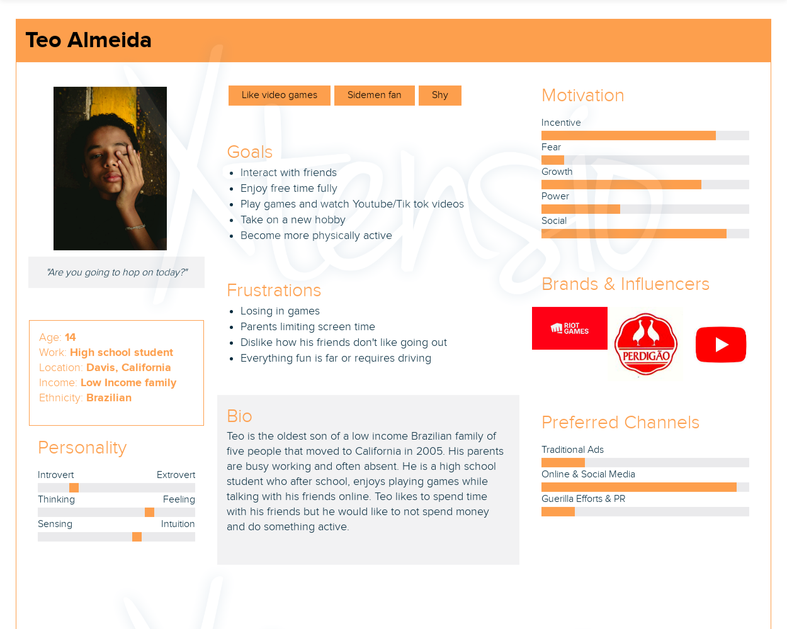
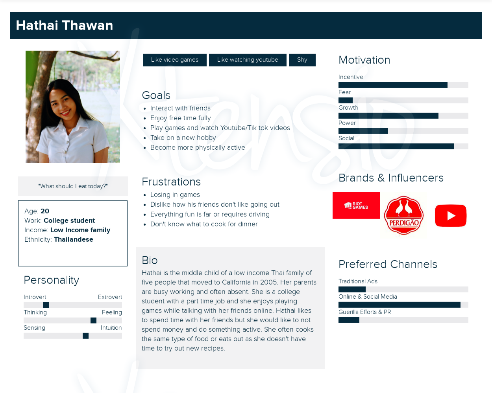
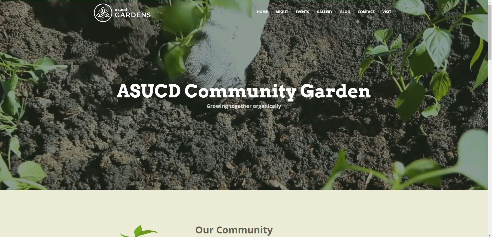
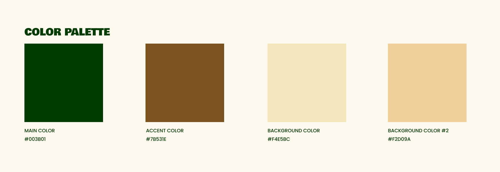

PROBLEM
In this era of rapid technological advancement, people spend more time on their devices rather than outdoors. Community gardens could become neglected because people are not even aware they have one nearby. Fresh produce can also go to waste because people don’t know how to use it.
SOLUTION
If the website provides information to access a healthier diet and lifestyle by contributing to the community garden, then people can save on food expenses, learn the skill to utilize various ingredients, and make new connections with people attending to the garden.
USER RESEARCH
Target Audience
My target audience is college students (17-26 yo), from low-income families, who spend most of their free time on their phones and computers. They also don’t know how to cook or have a limited recipe repertoire. By frequenting the community garden, they can rest their mind from technology overload, work in a team with people from different backgrounds, and grow their own produce.
Calls to Action
The website’s main focus is to invite people to get involved, by adding a call to action button on the top right corner of the web page. However, there are three ways people can specifically get involved:
-
‘VISIT’ which provides information about the community garden’s open hours and upcoming events;
-
‘DONATE’ is where people can financially support the garden, donate equipment, or sponsor events;
-
‘SUBMIT RECIPE’ where people can submit their own recipe to share with the community on how to prepare the local produce.
Persona
I wanted to form a deeper understanding of the users' needs, experiences, and behaviors. At first, I created the persona of Teo Almeida, following my first target audience which was low-income families with children under 18, that have a screen time of over 2 hours per day. However, as I continued to develop the website and received feedback, I wanted the recipe section to be one of the main features so I adjusted my target to college students.

Persona 1

Persona 2
COMPARATIVE RESEARCH
To get an idea of the content and elements included, I searched the web for community gardens websites. I noticed websites regarding community gardens look legitimate when they include information about their advantages, an about page, and the inclusion of contact information. The use of factual information about the impact of the community gardens makes a website look trustworthy and convincing.
The color palettes range from vibrant rainbow colors or earth colors like brown and green. The community garden websites include calls to action like volunteering, visiting, and/or donating. The website that greatly influenced the look of Open Den is the ASUCD community garden page.

DESIGN SYSTEM
To reflect the feel of a community garden in its digital platform, I chose to use an earthy color palette with a dark green as the predominant color, a warm brown for borders, and two similar light beige colors for background.

In terms of typography, I opted for Bowlby One for big headers to add a bold, fun, and friendly feel. For smaller text, I chose Poppins for its clarity and roundness.

IDEATION
Wireframe
I started by wireframing the different sections that need to be included into the website. This step helps to visualize the skeleton of the platform and allows to make changes easily early on.
First Draft
The first design already showcases a similar visual to the final product. In this version, the orange is used as an accent color and the main call to action on the top right is “submit recipe”.
FINAL PRODUCT
Desktop
The final website gives a warm and friendly feel to welcome the users. The landing page features the navigation, the mission statement, the produce of the month and the calls to action.
By scrolling down, you can view some information about the impact of the community garden, a calendar with the upcoming events, a photo gallery showcasing the produce in season, a collection of recipes, and an about section for Open Den. By clicking on the recipe link on the navigation, the drop-down menu appears as an overlay.
*Tip: the prototype is interactive - click on recipes to see more
Mobile
For the mobile version, I added a splash screen with the mission statement to welcome the user. The navigation bar turns into a hamburger menu that expands and occupies the whole screen.
*Tip: the prototype is interactive - tap on the menu icon > recipes > ingredients
CONCLUSION
By working on this project, I independently ideated and created a digital product in only 6 weeks. I learned about design patterns and how they’re always changing to adapt to their users. I challenged myself to ideate experimental patterns without giving up usability, like the recipe section. I managed to use only self-produced images by quickly improvising with the resources I had at hand. With the feedback sessions, I learnt how valuable it is to take criticism objectively to develop a successful product.
Going forward, I will take responsibility to keep the user as the first priority in my product design projects. In a team setting, I will give and receive feedback with an unbiased state of mind. Flexibility, experimental drive, and open mindedness will become an essential part of my creative process.